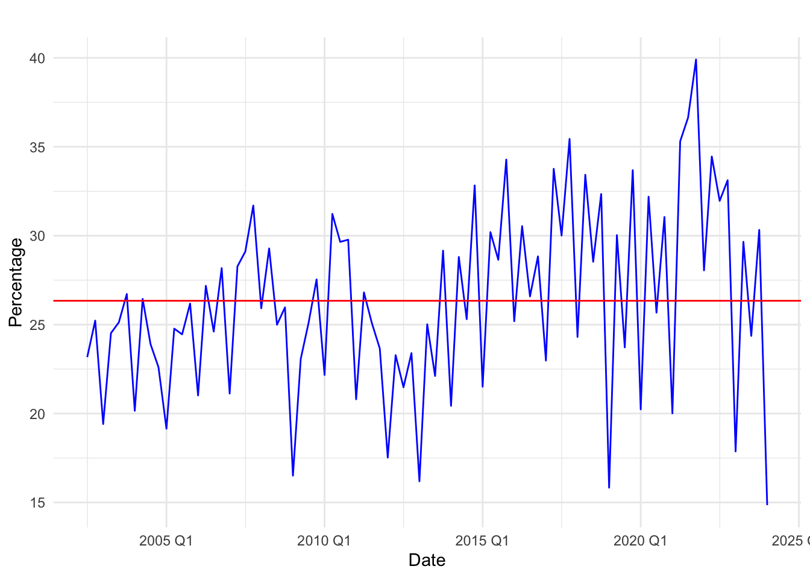
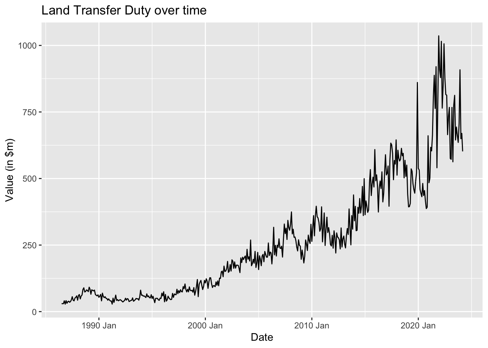
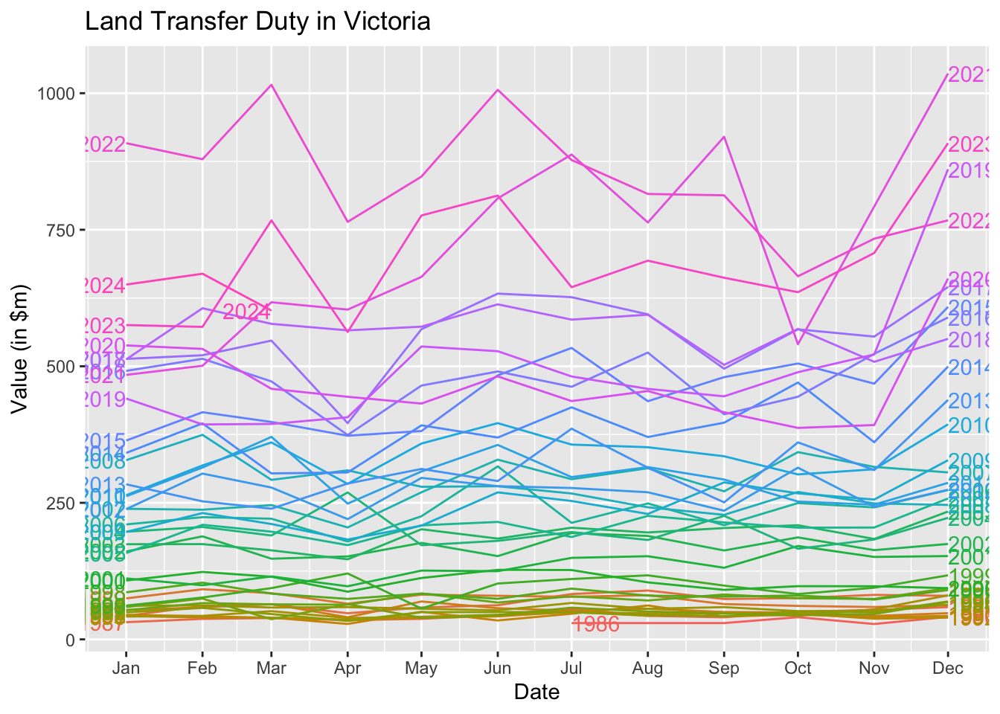
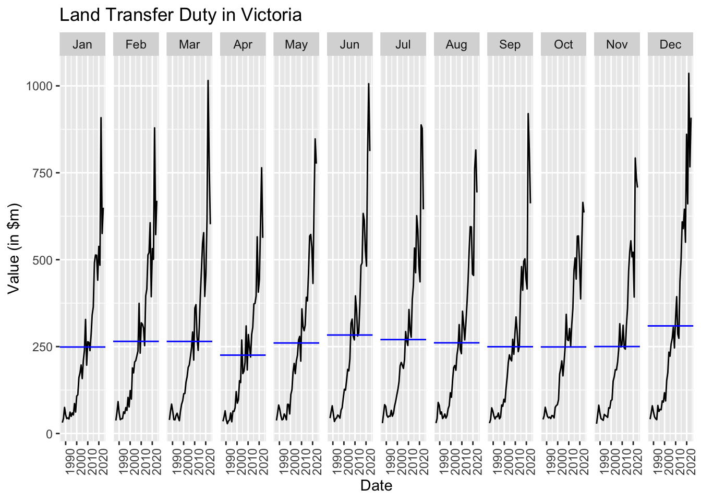
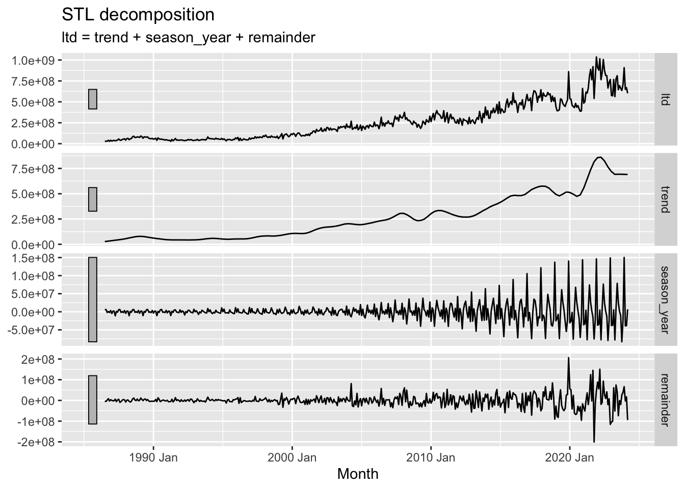
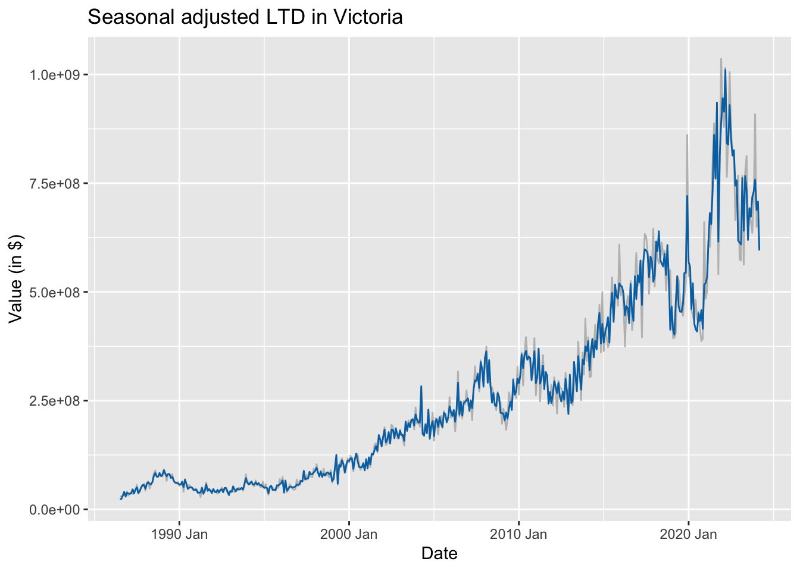
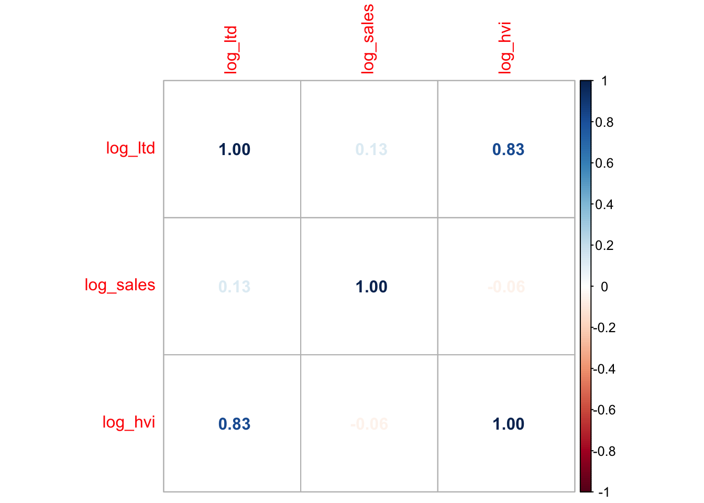
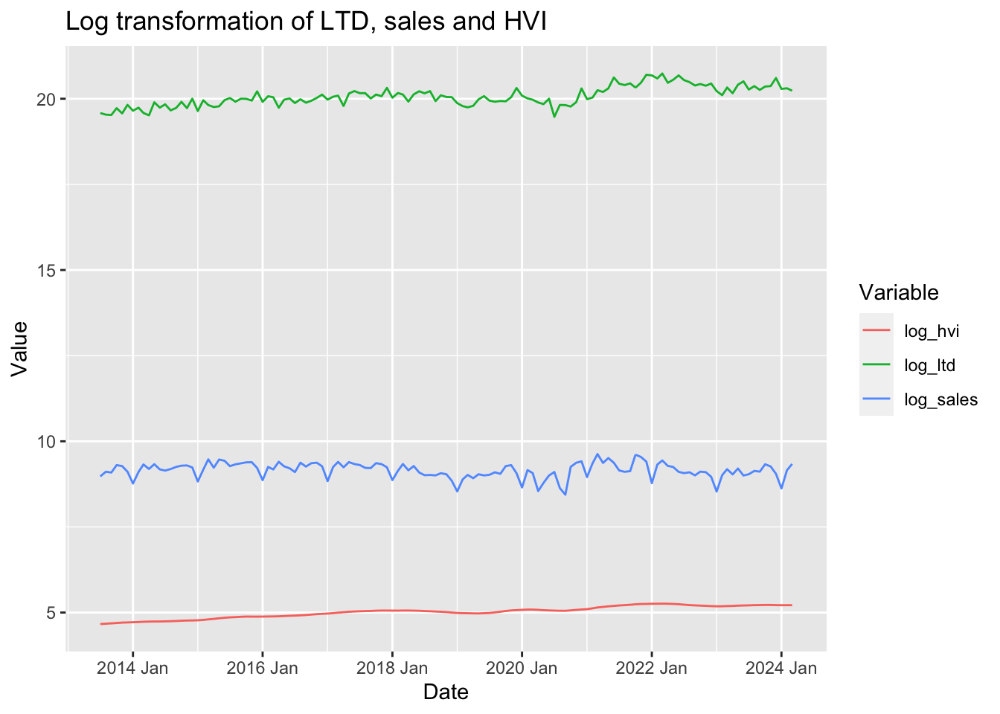
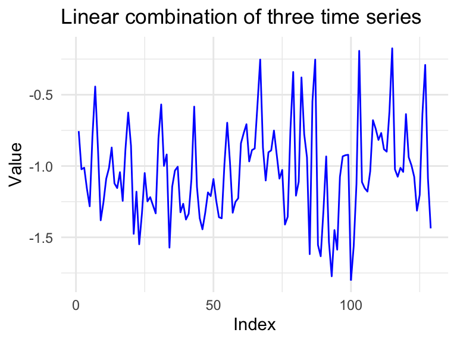

# Load ltd aggregate date
ltd_agg <- read_excel(here("data/LTD_new.xlsx"), sheet = 1) |>
rename(Date = ...1,
ltd = LTD,
sales = SALES,
hvi = HVI) |>
dplyr::select(c(Date, ltd, sales, hvi))
# Load ltd unit data and join with aggregate data
ltd_unit <- read_excel(here("data/LTD_new.xlsx"), sheet = 2) |>
rename(Date = ...1) |>
dplyr::select(Date, ltd_total, ltd_nonres, ltd_comm, ltd_ind, ltd_other, ltd_res) |>
left_join(ltd_agg, by = c("Date")) |>
dplyr::select(-ltd)Forecast Reconciliation for Land Transfer Duty
# Tax revenue data
tax_rev <- read_excel(here::here("data/tax_rev.xlsx"), sheet = 2) |>
rename(Date = ...1)|>
mutate(reliance = `Reliance on stamp duty` *100 ) |>
dplyr::select(Date, reliance) |>
mutate(Quarter = yearquarter(Date)) |>
dplyr::select(-Date) |>
as_tsibble(index = Quarter) |>
relocate(Quarter)Abstract
- Overview: Briefly summarize the purpose, methodology, key findings, and implications of the forecast.
- Key Recommendations: High-level actionable recommendations based on the forecast results.
Introduction and background
The property sector plays a pivotal role in Australia’s economy, accounting for 1 in 4 jobs indirectly and contributing around 13% of Gross Domestic Product (GDP). In the 2021 financial year, property sales totaled approximately $350 billion (Real Estate Institute of Australia, 2021). Land transfer duty, previously known as stamp duty, significantly impacts property transactions and the sector as a whole. A literature published by the New South Wales Treasury found that a 100 basis point (1%) cut in land transfer duty could boost property transactions by 10% (Malakellis & Warlters, 2021).
Land transfer duty is a tax applied to the “dutiable value” of a property being purchased or acquired, whether it is a first home or an investment property. The dutiable value is determined as either the property’s purchase price or its market value, whichever is greater. Several factors influence the amount of duty paid, including the buyer’s intended use of the property, foreign purchaser status, and eligibility for exemptions.

Additionally, Victoria’s tax revenue heavily relies on land transfer duty. As can be seen from Figure Figure 1, over the past 20 years, on average, land transfer duty accounts for 27% of Victoria’s tax revenue. Despite its perceived inequity and various exemptions designed to aid homebuyers, abolishing this duty remains challenging due to the need for equivalent revenue replacement. If this duty is removed, the government will need to introduce one or more new taxes to generate equivalent revenue.
To balance the need for sufficient tax income without discouraging property transactions, the Department of Treasury has been closely working with the government on policy adjustments, subsidies, exemptions, and restrictions. Accurate forecasts of land transfer duty, both short-term (1 to 3 months) and long-term (12 months), are essential for these decisions.
This report introduces a new forecasting methodology aimed at improving the accuracy of these predictions. By employing forecast reconciliation and combining cross-sectional and temporal hierarchies, we aim to provide the Department of Treasury and Finance with more reliable forecasts to inform policy-making.
Data Description
Data Source
Detail the sources of the LTD data, including collection methods, frequency, and historical range.
Variables Description
Describe each variable used in the analysis, including dependent and independent variables.
Initial Data Analysis (IDA)
Data Cleaning and Manipulation
Descriptive Statistics
Based on summary statistics results from table \(\ref{tab:statsumone}\) and table \(\ref{tab:statsumtwo}\),
- Land Transfer Duty Overview:
- The total land transfer duty reported has varied considerably, ranging from approximately 286.2 million to over 1.013 billion over past . This variability indicates significant fluctuations in the real estate market activity and property value changes over the years.
- Residential transactions dominate the LTD collection, contributing between 238.1 million and 761.4 million. This suggests that residential real estate remains a vital part of the market, possibly reflecting trends in housing demand and price movements.
- Non-residential transactions, though smaller than residential, still make a substantial contribution, with LTD from this sector ranging from about 42.9 million to 357.2 million. Within this, the commercial sector is the most significant, followed by industrial and other sectors (such as agricultural).
- Detailed Sector Analysis:
- Commercial Sector: With LTD ranging from 22.1 million to 132.4 million, this sector shows substantial activity, possibly reflecting economic growth, investment trends, and business expansions.
- Industrial Sector: This sector has collected LTD between 5.2 million and 214.4 million, highlighting some large-scale industrial transactions or developments during certain periods.
- Other Sectors: Including smaller sectors like agricultural, contributions range from 3.3 million to 74.5 million, indicating sporadic activity that may correspond with specific market or economic conditions.
- Residential Sector Analysis:
- The residential sector consistently represents the largest portion of LTD, underscoring its importance to the overall property market. The variability in amounts likely mirrors the housing market dynamics, including fluctuations in home prices and the volume of transactions.
- Economic Indicators:
- Sales: The volume of sales has fluctuated from 4,629 to 15,177, indicating periods of both high and low market activity. The relatively close mean and median values suggest a fairly consistent level of transactions across the period.
- Home Value Index (HVI): The HVI has ranged from 106.2 to 192.4, which is indicative of significant changes in home values. A higher HVI suggests increasing property values, which could contribute to higher LTD collections.
This analysis suggests that while the property market is subject to cyclical changes reflected in LTD collections, the residential sector remains a cornerstone, significantly influencing overall market dynamics. Understanding these patterns can help in forecasting future trends and making informed decisions in real estate and financial sectors.
Exploratory Data Analysis (EDA)
Time series analysis
ltd_agg_ts <- ltd_agg |>
mutate(Month = yearmonth(Date)) |>
select(-Date) |>
as_tsibble(index = Month) |>
relocate(Month)
ltd_unit_ts <- ltd_unit %>%
mutate(Month = yearmonth(Date)) %>%
select(-Date) %>%
as_tsibble(index = Month) %>%
relocate(Month)Land Transfer Duty
Trend

As spotted by the figure Figure 2, ltd increases over time with some significant drops at 08-09s (GFC) and 2020-2021 (Covid-19). There is no clear sign of seasonal pattern.
Seasonal Pattern

Apart from there is a small hint of drop at the start of each quarter, figure Figure 3 shows that there is no clear sign for seasonal pattern

However, in the figure Figure 4, the blue lines, indicating the means for each month, disagree with the sign of seasonal pattern spotted from figure \(\ref{fig:sspattern}\).
Decomposition


Figure Figure 5 shows that there is no seasonal pattern for ltd and the large grey bar in the seasonal panel shows that the variation in the seasonal component is smallest compared to the variation in the data.
Moreover, figure Figure 5 also shows that there is a sign of heterogeneity in ltd and thus log transformation may needed before model fitting.
Also the figure Figure 6 shows that there is not much difference between seasonally adjusted ltd and the original ltd, which confirms the lack of seasonal pattern.
Sales
Home Value Index
Correlation Analysis

The figure Figure 7 shows that LTD and HVI are highly mutually correlated. However, the sales is mostly non-correlated with other 2 variables

The figure Figure 8 shows that >>>
For additional verification, we perform a Johansen cointegration test, positing the null hypothesis that no cointegration relationship exists.
jtest <- ca.jo(log(ltd_unit_ts[,c(2,8,9)]), type="trace", K=2, ecdet="none", spec="longrun")
jtest@teststat > jtest@cval[, "5pct"]r <= 2 | r <= 1 | r = 0 |
FALSE TRUE TRUE The test results allow us to reject the null hypothesis that \(r \leq 1\), yet we fail to reject the null hypothesis that \(r \leq 2\). This suggests that among the three variables, the rank of the matrix exceeds 2, indicating the presence of at least two cointegration relationships.
s <- ltd_unit_ts |>
mutate(log_ltd = log(ltd_total),
log_sales = log(sales),
log_hvi = log(hvi)) |>
dplyr::select(c(log_ltd, log_sales, log_hvi)) |>
summarise(s = log_ltd*1.000 - 1.529098*log_sales - 1.417812*log_hvi)
df <- data.frame(Index = 1:nrow(s), Value = as.numeric(unlist(s[,2])))
ggplot(df, aes(x = Index, y = Value)) +
geom_line(color = "blue") +
labs(y = "Value", x = "Index", title = "Linear combination of three time series") +
theme_minimal()
linear_comb <- as.numeric(unlist(s[,2]))
adf.test(linear_comb)
Augmented Dickey-Fuller Test
data: linear_comb
Dickey-Fuller = -3.1846, Lag order = 5, p-value = 0.09361
alternative hypothesis: stationaryPreliminary Findings:
Summarize insights gained about the data and any implications for modeling.
Methodology
Hierarchical time series
Upon analyzing the data characteristics and the disaggregation of LTD, it becomes evident that a three-level hierarchy structure can be established. There is utility in generating forecasts at various levels of aggregation, driven by diverse reasons and objectives. For instance, forecasting solely at the total or top level may lead to inaccuracies due to the limited number of time series encompassed. Additionally, each level of aggregation may exhibit distinct characteristics; for instance, transactions involving residential properties might vary from those involving non-residential properties due to differences in market dynamics or market size for each property type.
In an ideal scenario, forecasts from different levels of aggregation could seamlessly sum up to the top level. However, practical implementation often reveals incoherent among independently produced forecasts. Consequently, it becomes vital for forecasts to align and aggregate according to the hierarchical structure organizing the array of time series. As a solution to this challenge, reconciliation forecasting emerges as one of the most prevalent and effective methodologies employed today.
Within the domain of hierarchical time series forecasting, there are three traditional single level approaches for generating forecasts for hierarchical time series. The first, known as the bottom-up approach, initiates by producing forecasts for each series at the lowest level and subsequently aggregates these to generate forecasts for the upper levels of the hierarchy. Conversely, the top-down approach starts with a forecast at the highest level, which is then disaggregated to lower levels using predetermined proportions—typically based on historical data distributions. Lastly, the middle-out approach amalgamates elements of both the bottom-up and top-down methods.
Forecast reconciliation
Recall from the data structure and insights from EDA section, we can construct this hierarchical structure for LTD:
\[ \begin{bmatrix} \text{Total}_{t} \\ \text{Non-residential}_{t} \\ \text{Residential}_{t} \\ \text{Commercial}_{t} \\ \text{Industrial}_{t} \\ \text{Other}_{t} \\ \end{bmatrix} = \begin{bmatrix} 1 & 1 & 1 & 1 \\ 0 & 1 & 1 & 1 \\ 1 & 0 & 0 & 0 \\ 0 & 1 & 0 & 0 \\ 0 & 0 & 1 & 0 \\ 0 & 0 & 0 & 1 \\ \end{bmatrix} \begin{bmatrix} \text{Residential}_{t} \\ \text{Commercial}_{t} \\ \text{Industrial}_{t} \\ \text{Other}_{t} \\ \end{bmatrix} \] or in a more compact notation: \[ \text{LTD}_{t} = \text{S}\text{b}_{t}, \] where S represents the summing matrix defining how bottom-level series are aggregated.
As indicated by Hyndman and Athanasopoulos (2021), reconciliation forecasting involves the introduction of a mapping matrix, denoted as G, to the base forecast, which is determined by the adopted methodology. This matrix, when multiplied by SG, yields a coherent set of forecasts.
However, the traditional single level approaches may have their limitations since only base forecast at one level is used. In response to this, Wickramasuriya et al. (2019) introduced the MinT (Minimum Trace) optimal reconciliation methodology, which devises a G matrix aimed at minimizing the total forecast variance within the coherent forecast set.
This leads to the need for estimating \(\text{W}_{h}\), the forecast error variance of h-step-ahead base forecasts. There are four simplifying approximations in place that have been shown to work well:
OLS: \(\mathbf{W}_{h} = \text{k}_{h}\mathbf{I}\)
Variance Scaling: \(\mathbf{W}_{h} = \text{k}_{h}\text{diag(}\mathbf{\hat{W}}_{1}\text{)}\)
Structural Scaling: \(\mathbf{W}_{h} = \text{k}_{h}\mathbf{\Lambda}\)
MinT Shrinkage: \(\mathbf{W}_{h} = \text{k}_{h}\mathbf{W}_{1}\)
Model Selection
As depicted in figure \(\ref{fig:corrplot}\), land transfer duty (LTD) exhibits mutual correlations with variables such as sales and the home value index (HVI). It is important to note that these relationships are not unidirectional; factors like sales and HVI may influence LTD, but changes in LTD can reciprocally impact these variables. This dynamic interaction is also observed with economic indicators like inflation and interest rates.
The Vector Autoregression (VAR) model, which predicts future values of multiple time series based on their historical data, is well-suited for capturing these complex interactions. Furthermore, as illustrated in
One limitation of these models is their reliance on ample data to produce reliable parameters. Monthly data spanning over a decade for LTD has been found to be sufficient. Nevertheless, the subsequent section on cross-validation will elaborate on the precise sizing of the training dataset required to ensure compatibility with the VAR and VECM models.
In addition to VAR and VECM, the Autoregressive Integrated Moving Average (ARIMA) model has also been employed, primarily for purposes of comparison and validation of improvements. The efficacy of this comparison will be assessed through time series cross-validation, utilizing various accuracy metrics such as the Root Mean Square Error (RMSE), Mean Absolute Percentage Error (MAPE), and the Mean Absolute Scaled Error (MASE).
Time Series Cross-Validation
Definition and rationale
Time series cross-validation represents a sophisticated adaptation of the conventional training/test set approach for model selection, as stated by Hyndman and Athanasopoulos (2021). This methodology is particularly well-suited to time series data because it exclusively includes observations from periods prior to those being forecasted, distinguishing it from traditional cross-validation techniques.
In the scope of this project, time series cross-validation is employed to rigorously evaluate whether the VAR/VECM or ARIMA models yield more accurate forecasts for this dataset across forecasting horizons ranging from 1 to 12 steps ahead. Additionally, this approach is used to gauge the extent of improvement introduced by the reconciliation process in comparison to the b base forecasts. Another critical application of time series cross-validation in this context is to generate rolling forecasts over a 12-month period for various time intervals. This is essential for the Department of Treasury and Finance (DTF) to analyze the effects of market dynamics or policy changes on land transfer duty (LTD).
Forecasting
To create folds for the time series cross-validation procedure, we will use stretch_tsibble() function with user defined value for two arguments, .init for size of initial training set, and .step to define how many steps training sets will roll forward each time.
For example, stretch_tsibble(.init = 10, .step = 1) produces series of training sets, where first training set has size of 10 observations and will roll 1 step forward each time, i.e. the size of second set and third set will be 11 and 12, respectively. Each folds will be denoted by a unique .id value.
Generating forecast
To enhance forecast accuracy, this methodology extends beyond a cross-sectional hierarchical structure to incorporate a temporal dimension, culminating in cross-temporal reconciliation forecasting. This approach integrates forecasts across different time structures, and its efficacy is evaluated by comparing it with cross-sectional and temporal reconciliation forecasts individually to determine any improvements.
Given the monthly frequency of the data, additional aggregation levels such as bi-monthly, quarterly, four-monthly, semi-annually, and annually are established, with the annual aggregation representing the top level of the temporal hierarchy.
Models are fitted at each cross-sectional level across these varying temporal frequencies. A for loop is utilized to generate forecasts and residuals, which are subsequently organized into a matrix for each temporal frequency: monthly (denoted as k1), bi-monthly (k2), quarterly (k3), four-monthly (k4), semi-annually (k6), and annually (k12). These matrices are then collectively stored within a list.
This structured approach facilitates the fitting of different models tailored to each temporal frequency, allowing for adjustments in argument values as necessary. Moreover, if a distinct model is required for various cross-sectional levels, an if condition is employed within each temporal frequency loop to ensure this customization. The forecasts and residuals are then allocated to base and res data structures, respectively.
ARIMA
The ARIMA model will be implemented across all levels of the temporal hierarchical structure and at every cross-sectional level using the auto.arima() function from the forecast package. This function efficiently determines the optimal parameters for the autoregressive lag, differencing, and moving average components of the model by automatically adjusting them for the error terms.
Forecasts will be generated up to one year, or 12 months into the future, utilizing the forecast() function. This function is designed to produce both the mean point forecasts and the associated residuals, thereby providing a comprehensive output that includes predictions and their accuracy measures.
VAR/VECM
Fitting VAR and VECM models to complex hierarchical structured data necessitates a more intricate approach, as there is no standard method readily available for this specific application. Additionally, these models require the incorporation of external variables, such as sales and the home value index (HVI). To address these challenges, the chosen strategy involves the creation of two separate user-defined functions for VAR and VECM. These functions are designed to process the input data and output both the mean point forecasts and residuals, mirroring the functionality provided by the auto.arima() function. Given the significant differences in the scales of sales, HVI, and LTD data, it is advisable to employ logarithmic transformations prior to model fitting, followed by re-transformation to their original scales. This method will be embedded within both functions to ensure accurate scale representation.
Vector Autoregression (VAR) Model
The VAR fitting function, designated as var_forecast_fun(), accepts six parameters:
train: A series representing LTD data across various hierarchical levels.sales: The time series data for sales.hvi: The time series data for the Home Value Index (HVI).period: The temporal frequency for generating nested Date variables, such asmonth,2 months,quarter, etc.length: The total number of rows in the input data.fc_range: The forecast range, which may include 12 months for monthly data, or 6 two-month periods for bimonthly data, etc.
The input data is consolidated into a single dataframe, or tibble object, with an appropriately nested Date variable. This tibble is subsequently transformed into a tsibble object utilizing the as_tsibble() function from the tsibble package. A VAR model is then applied to this tsibble using the VAR(vars(train, sales, hvi)) syntax, where parameters such as lag are automatically determined by the function. However, temporal aggregation results in insufficient observations for semi-annual and annual frequencies if the lag exceeds two. To address this limitation, an if condition restricts the chosen lag for these data frequencies to one.
Post model fitting, forecasts and residuals are computed as standard. Nevertheless, due to the lag configuration, there might be instances of missing residual values. Given that the FoReco package does not support missing values in the residual input matrices, these missing values are substituted with the calculated mean of the residuals. Since the number of these substituted values ranges from one to three, their impact on the reconciled results is anticipated to be minimal.
Ultimately, the function is structured to output both the mean point forecast and residuals, aggregated into a list format for subsequent extraction.
Vector Error Correction Model (VECM)
The VECM fitting function, denoted as vecm_forecast_fun, accepts the same parameters as var_forecast_fun along with an additional lag parameter. This parameter facilitates the selection of varying lag lengths. The procedure for transforming the input data into a tsibble object remains consistent with that of the VAR model.
A distinct feature that differentiates VECM from VAR is its accommodation for non-stationary variables or those exhibiting cointegration patterns. The Johansen test, executed via the ca.jo() function from the urca package, assesses the presence of cointegration. The K parameter of ca.jo(), which determines the lag order in the VAR model employed within the Johansen procedure, is specified by the lag argument. This parameter can also be chosen using cross-validation to ascertain the optimal value for each temporal frequency or cross-sectional level, employing information criteria such as Akaike (AIC) or Bayesian (BIC).
Subsequent to the cointegration test, a significance level of 5% helps determine the value of r, representing the number of cointegrating relationships to be included in the VECM model. Should the Johansen test indicate an absence of a cointegration pattern, particularly in annual frequency data due to insufficient observations, a VAR model is utilized instead. If cointegration is confirmed, the VECM fitting function used is vec2var() from the vars package.
Similar to the VAR model, the VECM procedure also involves the generation of forecasts and residuals. Additionally, it addresses missing residual values caused by lag length, in a manner analogous to the var_forecast_fun procedure. The output of this function comprises a list containing the mean point forecast and residuals.
Reconciliation Process
The reconciliation procedure is consistent across ARIMA and VAR/VECM cross-validation models. Initially, forecasts and residuals from all cross-sectional levels and temporal frequencies are amalgamated into base and res datasets. The FoReco package facilitates the reconciliation process, offering integrated solutions for cross-sectional, temporal, and cross-temporal reconciliation.
htsrec(): Implements cross-sectional reconciliation utilizingshr, which denotes the use of a shrunk covariance matrix—specifically MinT-shr.thfrec(): Facilitates temporal reconciliation employingstrucfor the computation of structural variances.octrec(): Conducts optimal cross-temporal reconciliation, usingstructo calculate cross-temporal structural variances.tcsrec(): Executes heuristic first-temporal-then-cross-sectional reconciliation, combining structural variances for temporal aggregation with a bottom-up approach for cross-sectional aggregation.
The output of this reconciliation process is a matrix where rows represent different cross-sectional levels, and columns span from a 1-step to a 12-step-ahead forecast, reflecting the original scale of land transfer duty (LTD).
Subsequently, this matrix is integrated into a nested structure within an array corresponding to its designated .id value. This entire forecasting and reconciliation process is then repeated for subsequent folds or .id values.
Results
Model Performance:
Presentation of model accuracy and comparison.
Forecast Results:
Detailed discussion of the forecasted values and their confidence intervals.
Discussion
Interpretation of Results:
Analysis of what this forecasts mean for DTF.
Limitations and Assumptions:
Any limitations encountered during the forecasting process.
Conclusion and Recommendations
Summary:
Recap the findings and their implications.
Future Work:
Suggestions for improving future forecasts.
Appendix
# Filter out numerical variables from train dataset and set it into a new df
numerical_dat <- ltd_unit_ts[, sapply(ltd_unit_ts, is.numeric)]
# Create an empty dataframe to store results
numerical_summary <- data.frame(
Variable = character(0),
Min = numeric(0),
Quartile_1 = numeric(0),
Median = numeric(0),
Mean = numeric(0),
Quartile_3 = numeric(0),
Max = numeric(0),
stringsAsFactors = FALSE
)
# Create summary statistics table for numerical variables
for (i in 2:ncol(numerical_dat)) {
x <- numerical_dat[, i]
# Calculate summary statistics using summary()
summary_result <- summary(x)
# Define a regular expression pattern to match the numeric value
pattern <- "-?\\d+\\.?\\d*"
# Create a data frame for the current numerical variable
result_df <- data.frame(
Variable = names(x),
Min = regmatches(summary_result[1], gregexpr(pattern, summary_result[1], perl=TRUE))[[1]],
Quartile_1 = regmatches(summary_result[2], gregexpr(pattern, summary_result[2],perl=TRUE))[[1]][2],
Median = regmatches(summary_result[3], gregexpr(pattern, summary_result[3], perl=TRUE))[[1]],
Mean = regmatches(summary_result[4], gregexpr(pattern, summary_result[4], perl=TRUE))[[1]],
Quartile_3 = regmatches(summary_result[5], gregexpr(pattern, summary_result[5],perl=TRUE))[[1]][2],
Max = regmatches(summary_result[6], gregexpr(pattern, summary_result[6], perl=TRUE))[[1]],
stringsAsFactors = FALSE
)
# Bind the result to the summary dataframe
numerical_summary <- rbind(numerical_summary, result_df)
}
# Set row names to be the names of the numerical variables
rownames(numerical_summary) <- numerical_summary$Variable
numerical_summary <- numerical_summary[, -1]
# Creating a scrollable HTML table
html_numerical_table <- kable(numerical_summary, "html") %>%
kable_styling(full_width = FALSE) %>%
as.character()
# Creating scrollable div
html_numerical_output <- paste0(
'<div style="max-height: 400px; overflow-y: auto;" id="NumericVar">',
'<p>Summary statistics of numerical features</p>',
html_numerical_table,
'</div>'
)
cat(html_numerical_output)Summary statistics of numerical features
| Min | Quartile_1 | Median | Mean | Quartile_3 | Max | |
|---|---|---|---|---|---|---|
| ltd_nonres | 42909678 | 76682419 | 97505851 | 109079081 | 135555977 | 357222264 |
| ltd_comm | 22106375 | 42135408 | 54959990 | 59467363 | 70539203 | 132405000 |
| ltd_ind | 5229382 | 17094782 | 24748954 | 31256622 | 37482400 | 214372653 |
| ltd_other | 3325394 | 9464705 | 14776865 | 18252446 | 24363583 | 74469171 |
| ltd_res | 238100812 | 346798966 | 406948825 | 433146031 | 489072115 | 761393438 |
| sales | 4629 | 8414 | 9697 | 9680 | 11158 | 15177 |
| hvi | 106.2 | 132.5 | 155.0 | 152.9 | 178.4 | 192.4 |
References
Bibliography:
Cite all data sources, literature, and software used in the report the insights generated by your work.
Hyndman, R.J., & Athanasopoulos, G. (2021) Forecasting: principles and practice, 3rd edition, OTexts: Melbourne, Australia. OTexts.com/fpp3. Accessed on
https://treasury.gov.au/sites/default/files/2022-03/258735_real_estate_institute_of_australia.pdf
https://www.treasury.nsw.gov.au/sites/default/files/2021-06/the_economic_costs_of_transfer_duty_a_literature_review.pdf